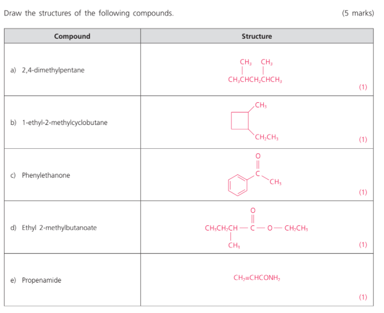
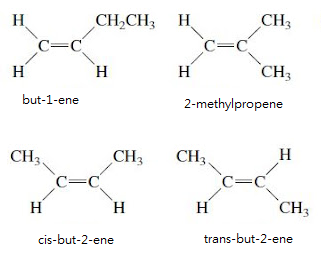

2021-08-14
Question 1
Fill in the table.
Question 2
Which of the following compounds have optical isomers which rotate plane-polarized light in opposite directions?
2,3,4,5
Question 3
Draw all possible isomers of methylcyclopropane that decolorize bromine water.
